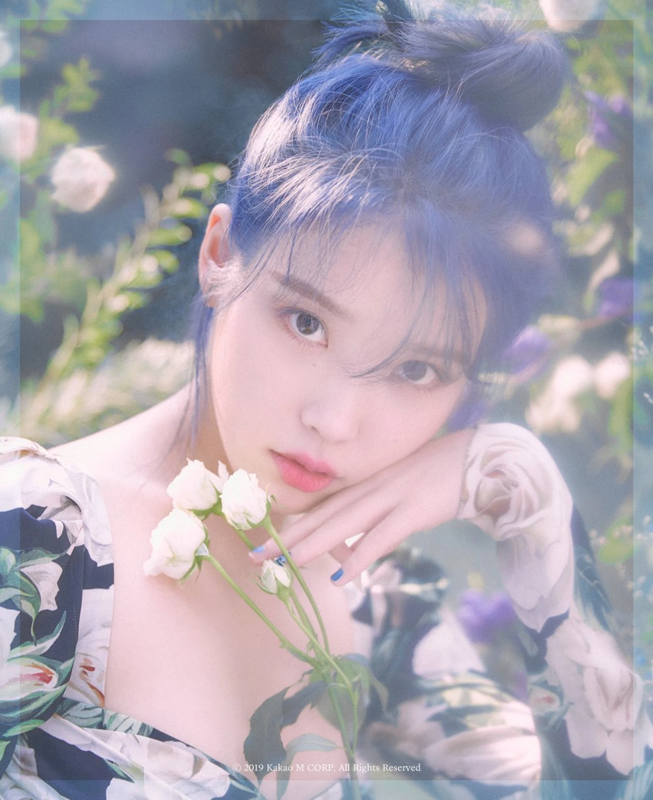

My Favourite Song,
Love Wins All by IU.

“Love Wins All” by IU is one of my favourite songs because it feels deeply emotional and comforting at the same time. The lyrics, melody, and cinematic atmosphere make the song feel very sincere and meaningful. I love how soft yet powerful the emotions are throughout the song, especially the feeling of loving someone even through sadness, fear, and uncertainty. It is the kind of song that feels warm, nostalgic, and quietly beautiful every time I listen to it.